DAY / GOLDEN HOUR / DUSK
Warm clearings, cooler shade.
Five native comparisons isolate lighting and sky/fog balance in the normal-game world. The selected candidate appears first, followed by the previously merged baseline and the alternative light balance. Dusk has one shared darker sky/fog candidate, shown once.
Moderate was selected after independent code and rendered review. The stronger alternative loses detail in shaded trunks and rocks. These settings are included in the updated normal playable build. This website contains screenshots, not a playable mobile game. Tap an image for its full-resolution original. The previous meadow integration remains available.
NORMAL GAME / LIGHTING COMPARISON
Day / ordinary player camera
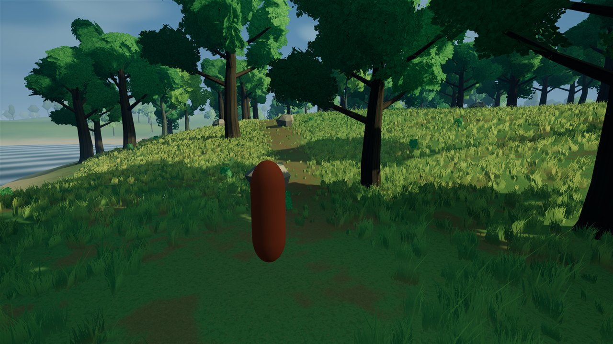
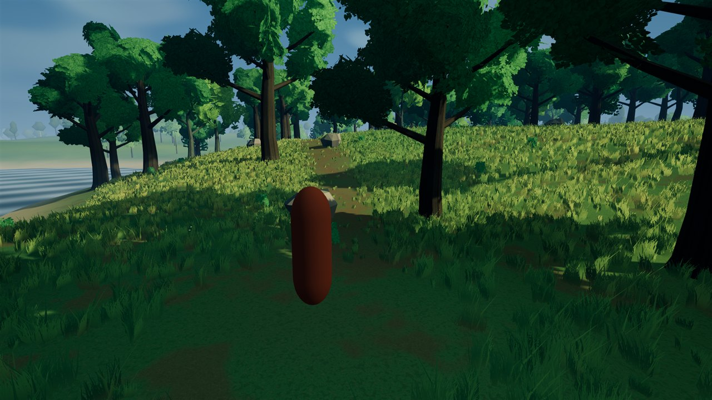
NORMAL GAME / LIGHTING COMPARISON
Day / grass and forest edge
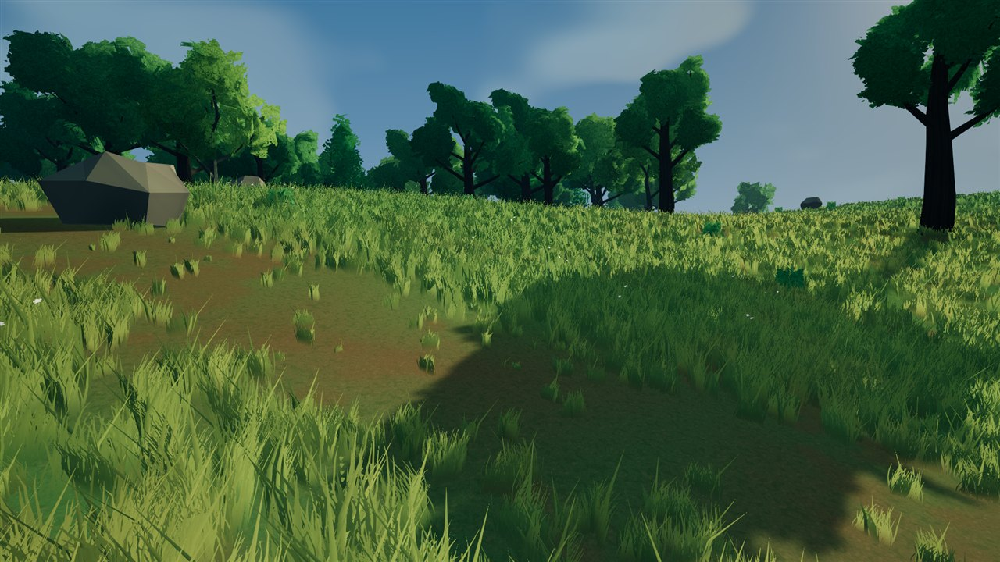
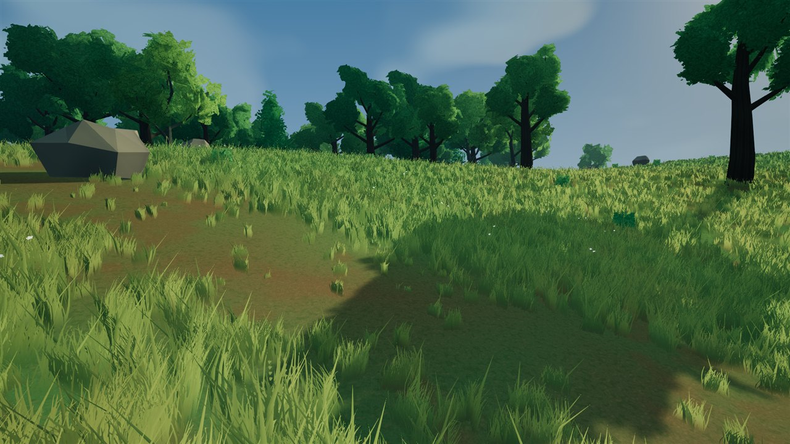
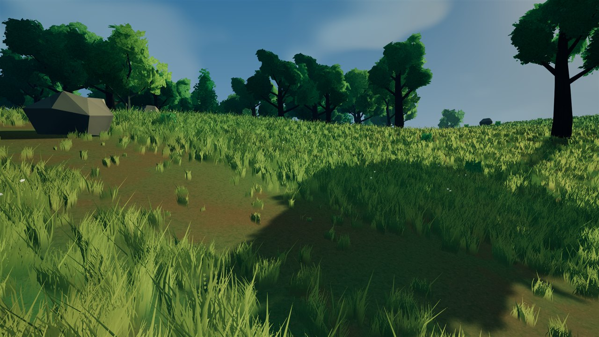
NORMAL GAME / LIGHTING COMPARISON
Golden hour / ordinary player camera
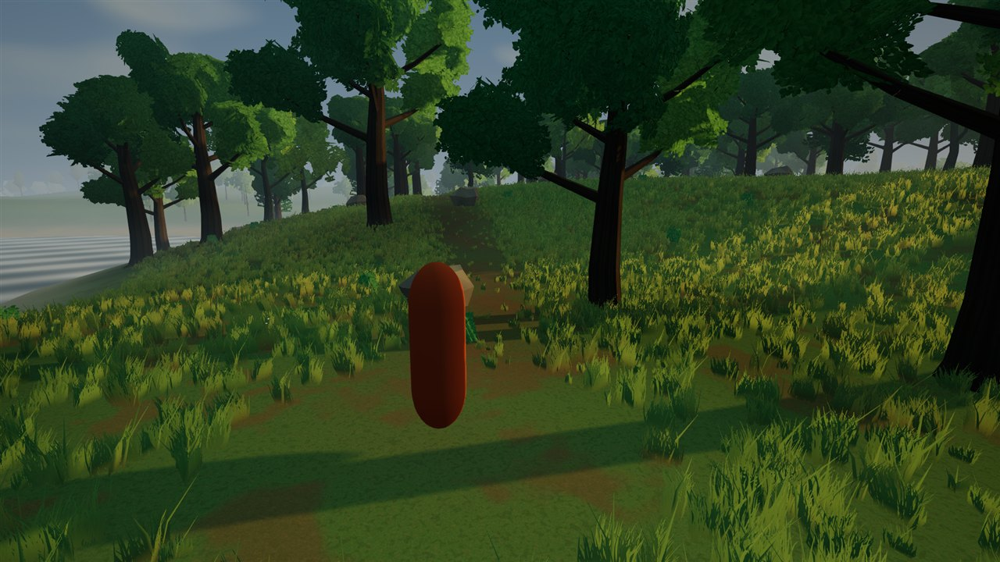
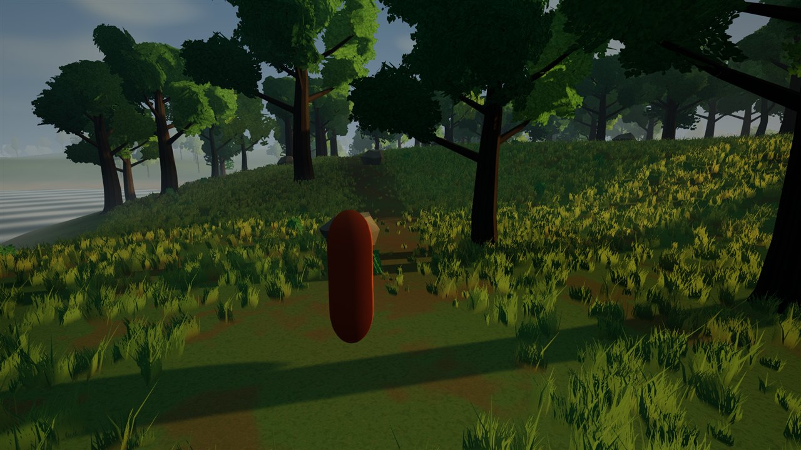
NORMAL GAME / LIGHTING COMPARISON
Dusk / ordinary player camera
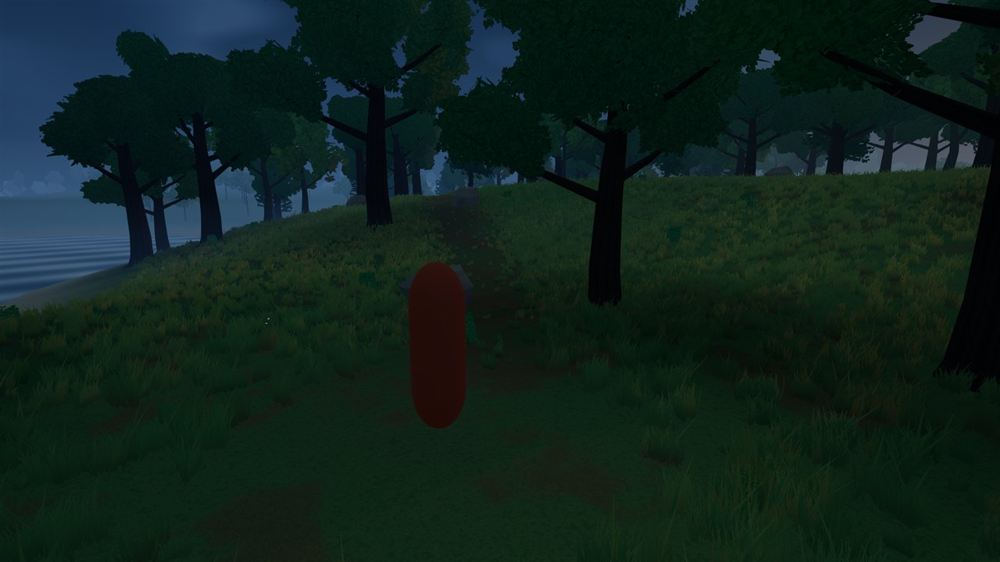
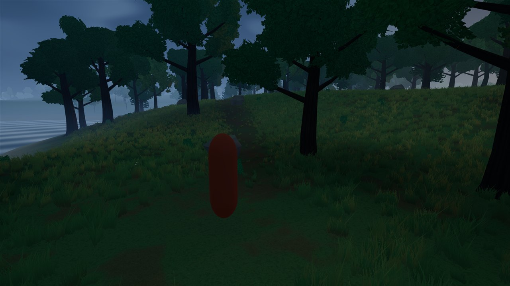
NORMAL GAME / LIGHTING COMPARISON
Dusk / distant landscape
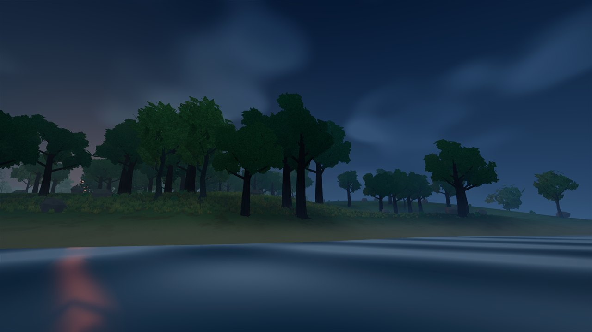
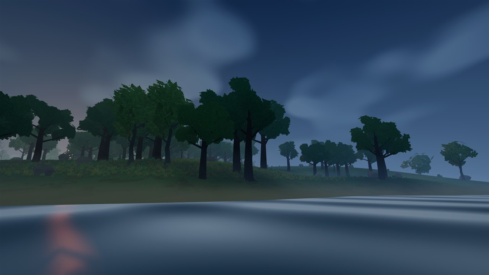